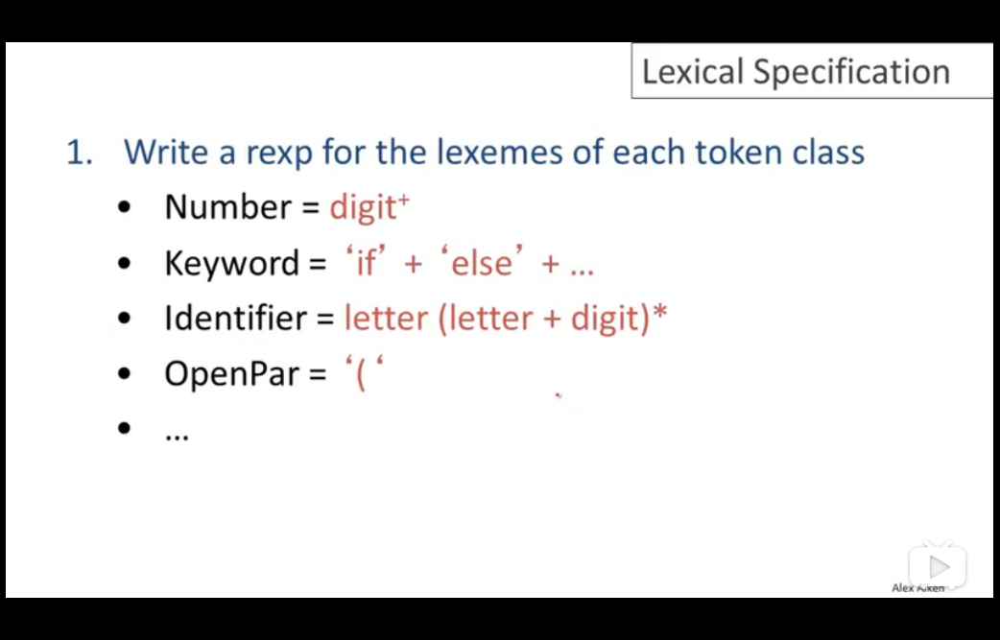
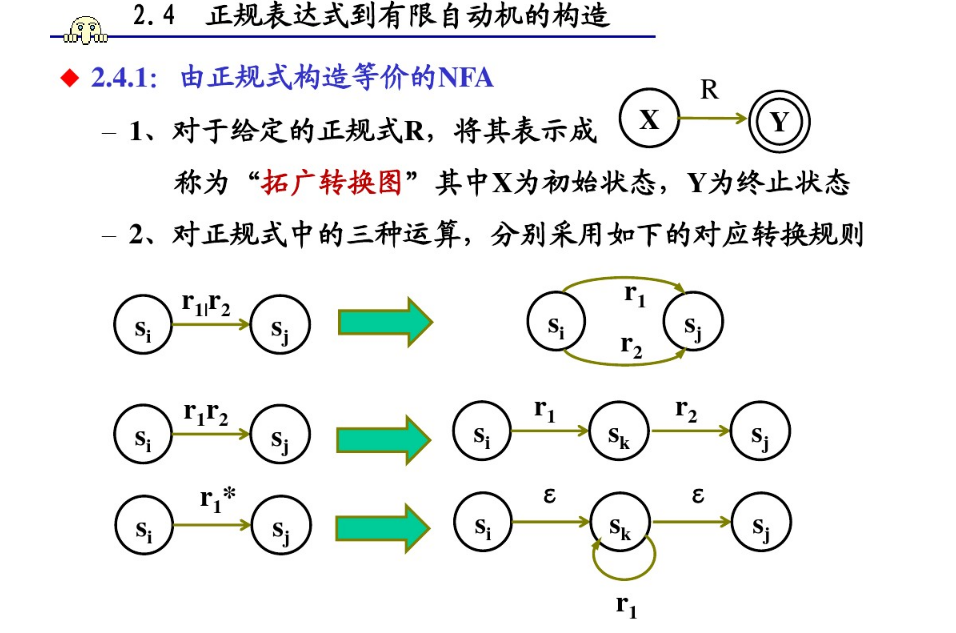
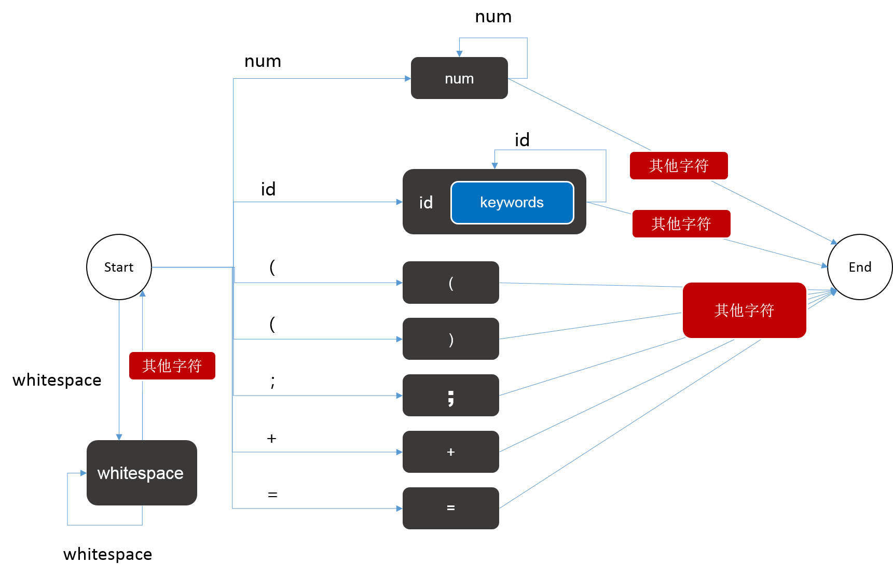
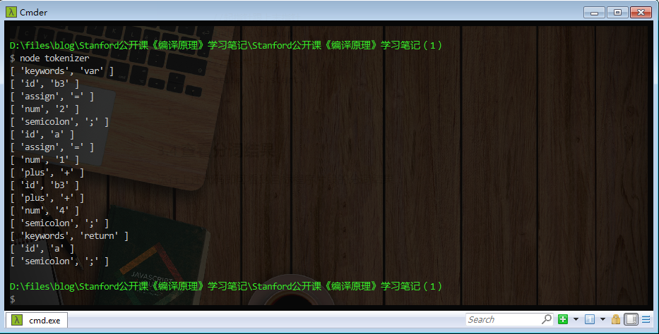

目录
示例代码托管在：http://www.github.com/dashnowords/blogs
博客园地址：《大史住在大前端》原创博文目录
华为云社区地址：【你要的前端打怪升级指南】
B站地址：【编译原理】
Stanford公开课：【Stanford大学公开课官网】
课程里涉及到的内容讲的还是很清楚的，但个别地方有点脱节，任何看不懂卡住的地方，请自行查阅经典著作《Compilers——priciples, Techniques and Tools》(也就是大名鼎鼎的龙书）的对应章节。
完整的编译的5个基本步骤包括lexcical anlysis,parse,sematic,optimize,code generate。课程中并没有使用复杂的编程语言，而是一种用于课堂教学的自发明语言COOL，很明显老师为它写好了编译器程序。
任务：将字符串分解成为[Type, (Value)]元组的形式的词法单元。
“龙书”里的示例更为直观，例如表达式语句
E = M * C ** 2进行词法分析后会得到如下的类似结果：[
id,指向符号表中E的条目的指针][
assign_op][
id,指向符号表中M的条目的指针][
mult_op][
id,指向符号表中C的条目的指针][
exp_op][
number,整数值2]
词法分析基本需要经历如下几个阶段：
Lexical Specification——>Regular expressions——>NFA——>DFA——>Table-driven Implementation of DFA
COOL中的基本Type包括如下几个类别：
Indentifier标识符-指以字母开头后续为若干个字母或数字的字符组Integer-指一组非空的数字字符Keyword- 指语言中的关键词，例如if，else等Whitespace- 指一组非空的空格字符或换行符或制表符很多程序设计语言中的分词原则基本都会覆盖关键字，运算符，标识符，常量，标点符号，他们也会在后面的实现中被作为终止符集合，课程板书中也提供了COOL分词原则的类正则形式。

分词时类型的正则匹配默认为贪婪模式，即匹配更多的字符。词法单元也具备一定的优先级次序（通常也是代码逻辑的实现顺序），例如if从正则上来判断既符合Keywords也符合Identifier，此时该单元的类型就应该标记为Keywords。这个阶段就完成了从Lecical Specification——>Regular expressions的部分。
FA是一个可以自动识别词法单元的机器，它是一个状态转换图，“有限”是指它包含的状态是有限的，一个状态读入一个字符后，后继的状态可能为：
如果每次转换后的后继状态都是唯一的，则称为DFA（确定有限自动机），如果后继状态可能有多个则称为NFA（不确定有限状态机）。由于DFA的状态转移路径是唯一的，所以作为状态查询图时，无论成功或者失败只需要运行一次，但NFA就可能需要运行多次。
正则表达式是可以转换为NFA形式的，或许你已经在一些可视化正则表达式的网站上[https://regexper.com ]见过类似的形式。下图比较清晰地展示了从正则表达式到NFA状态图的转换规则(Regular expressions——>NFA)：

如果一个DFA和一个NFA能够识别的字符集是一致的，则称它们为等价的，对于任意NFA，一定存在一个DFA与其等价，由NFA构建DFA的过程被称为DFA的确定化，也就是NFA——>DFA的过程。这个过程是围绕ε -closure状态集合的概念展开的，大致的过程就是从起点开始，每次将当前状态和通过若干次ε转换（它是一个特殊的状态转移函数，表示转换后的状态还是当前状态）作为一个新的ε -closure状态集合 ，使用矩阵记录每个ε -closure集合转换前后的集合，最后对整个状态转移矩阵进行标记重命名，就可以得到一个DFA，事实上转化后的DFA中的每一个状态，就是NFA中的一个ε -closure集合，你可以将它理解成一个通过分组来简化表达方式的过程，相关的过程可以参考下面这个文章西北农林科技大学编译原理课程PPT【词法分析】，里面图比较多，能够辅助理解，本文不再赘述。
至此1-4课就结束了，估计看视频课程的人也是一脸懵逼，因为课程并没有讲解如何利用DFA得到最终期望的形式——Token元组，那么最后我们就自己手动来实现一下。
假设我们需要对下面这段代码进行分词解析：
let snippet = `
var b3 = 2;
a = 1 + ( b3 + 4);
return a;
`;那么先来进行一些基本类型集合定义：
//解析结束标记
const EOF = undefined;
//Token Type 可识别的Token类型，
const TT = {
num: 'num',
id: 'id',
keywords: 'keywords', //var | return
lparen: 'lparen',// (
rparen: 'rparen',// )
semicolon: 'semicolon', //;
whitespace: 'whitespace', // \n | \t | \s (空格，制表符，换行符)
plus: 'plus', // +
assign: 'assign',// =
}
// 状态集类型，除开始和结束外，其他可以与Token支持的类型相对应，每次分词从start状态开始，接收一个字符后改变状态，直到在done状态结束时，可以得到一个token
const S = {
start: 'start',
done: 'done',
...TT
}进行工具函数定义：
//判断是否为关键词(为简化流程，仅检测上面示例中包含的关键词)
const isKeywords = (token) => ['function', 'return', 'if', 'var'].includes(token);
//判断是否为数字
const isDigit = c => /\d/.test(c);
//判断是否为合法的标识符字符
const isValidId = c => /[A-Za-z0-9]/.test(c);
//判断是否为空格
const isBlank = c => /(\s|\t|\n)/.test(c);以上面定义的状态集合和token类别为依据构建DFA:

分词的逻辑实际上就是，每次先将状态置为start,然后读入一个字符，根据该字符判断下一个状态，只要没有到达完成状态done就继续读入字符，每次到达done状态时，就可以得到一个token，将其记录下来，然后重新将状态置为start，开始寻找下一个token直到分析完整个代码段。也就是说DFA状态机每运行一轮，就得到一个token。参考代码如下：
/**
* 词法分析
*/
function tokenize(code) {
let state = S.start;
let currentToken;//标记当前寻找到的token
let index = 0;//起始指针,每次分析指向start状态
let lookup = 0;//前探指针,每次分析最终指向done状态，start->done之间的字符即为token
while (code[lookup] !== EOF) { //如果还有字符
while (state !== S.done) { //开始拆分token
//获取下一个字符
let c = code[lookup++];
//根据当前状态和下一个字符判断DFA如何跳转
switch (state) {
case S.start: //开始为空集,实现DFA中各个状态转移分支
if (isDigit(c)) {
state = S.num;
} else if (isValidId(c)) {
state = S.id;
} else if (isBlank(c)) {
state = S.done;
} else if (c === '=') {
currentToken = [TT.assign, '=']
state = S.done;
} else if (c === '+') {
currentToken = [TT.plus, '+']
state = S.done;
} else if (c === ';') {
currentToken = [TT.semicolon, ';']
state = S.done;
};
break;
case S.num: //如果是整数
if (isDigit(c)) {
state = S.num;
} else {
currentToken = [TT.num, code.slice(index,lookup - 1)];
lookup -= 1; //从数字状态跳出后，最后一位需要参与下一轮分词，故回退一位
state = S.done;
}
break;
case S.id: //如果是标识符状态
if (isValidId(c)) {
state = S.id;
} else {
let tempToken = code.slice(index,lookup - 1);
lookup -= 1; //从标识符状态跳出后，最后一位需要参与下一轮分词，故回退一位
if (isKeywords(tempToken)) {
currentToken = [TT.keywords, tempToken];
}else{
currentToken = [TT.id, tempToken];
}
state = S.done;
}
break;
}
}
//state = S.done时跳出
currentToken && console.log(currentToken);
currentToken = undefined;
//起指针跟上末指针
index = lookup;
//开始下一轮分词
state = S.start;
}
}运行上述代码即可看到目标程序片段的分词结果：

至此，我们就得到了元组形式的分词结果，完成了编译中第一步lexical analysis的部分，笔者同时提供了一份包含token所在行列信息的版本，你可以从附件或【我的github仓库】中拿到示例代码，如果觉得对你有帮助，可以在github上为我加个星星哦~